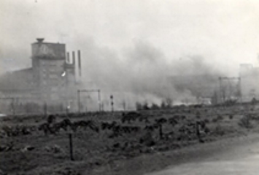
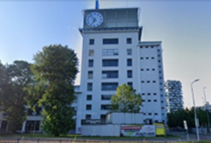

Sinterklaasbombardement - Philipsfabrieken
De Philipsfabrieken speelden een belangrijke rol in de totale oorlog. De Eindhovense radiobuizen waren van zeer groot belang in verbindingsapparatuur en radar. Vooral de radar speelde een essentiële rol in oorlogsvoering. Hierdoor waren de Philipsfabrieken de hoogste prioriteit van de Britten om te bombarderen.

×

|
Bijna honderd Royal Air Force vliegtuigen vielen de Philipsfabrieken aan. Fabrieken op de Emmasingel en in Strijp liepen zware schade op. Naast de schade aan de Philipsfabrieken waren er in de omgeving ook veel verwoestingen. |

×

|
Door extra laag te vliegen was de kans op een voltreffer groter. Aan de andere kant had het ook een groter risico voor de RAF-piloten, want zij waren door lager vlieger een makkelijker doelwit voor het Duitse afweergeschut. |